A pair of small, tactile devices that let two people play Simon together across any distance, in light, rhythm, and memory, no screens, no chat, just a quiet conversation that builds over days.
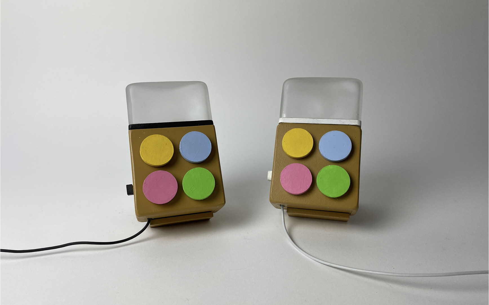
Long-distance relationships rely almost entirely on screens, calls that need scheduling, texts that pile up. The small, mundane signals of closeness don't have a digital equivalent. Milo is a screen-free way to leave each other those signals, played as a game.
"I love how nostalgic and calming it feels. I'd actually use it with long-distance friends.", Play tester · Edinburgh, 2023
Two devices, paired over the cloud. One person taps a sequence of colours; the other receives it, watches the lights play it back, repeats it, and adds one more. Get it right and play on. Get it wrong and the other player scores, and a new round begins.
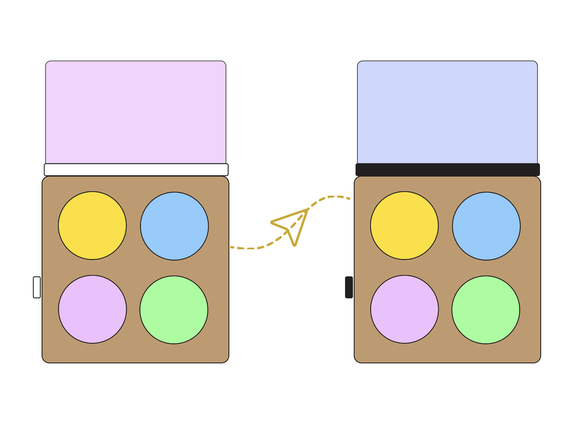
Player 1 taps three colours to begin a new game.
A blue light signals it's your turn. Press the side button when you're ready to play.
The NeoPixel ring plays back the colour sequence sent by the other player.
Tap the sequence back on the four coloured buttons. Add one more colour at the end to extend the round.
Flashing green and a rising beep. The longer sequence travels back to the other player.
Flashing red and a falling beep. The other player scores a point and starts a fresh sequence.
A rhythmic conversation, played across time and space.
The first design was a fixed object, sized to sit on a shelf at home, with a turn-light readable from across the room. It was almost complete when testing started telling us a different story.
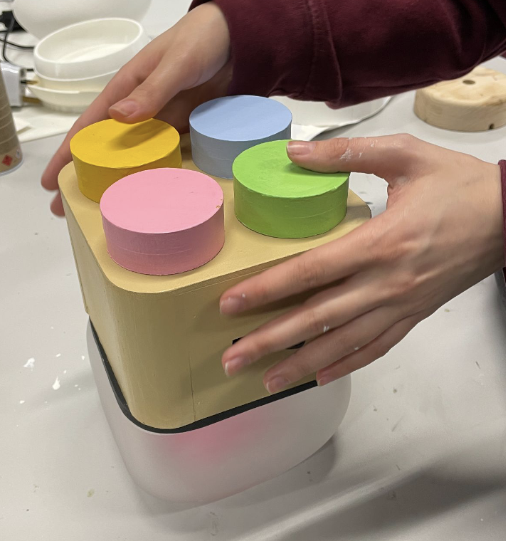
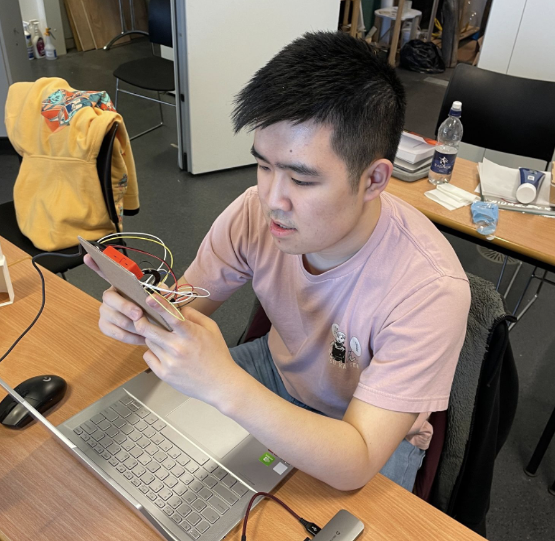
"Testers, including ourselves, kept preferring the cardboard electronics prototype over the actual one. We had been biased by the original Simon and hadn't designed for the way young adults actually pick things up.", Design journal · Iteration review, mid-project
The new direction kept the design language of the fixed version, rounded square, wood, pastel buttons, and shrank it to hand size. Two units, paired and visually distinct: white diffuser cap for Player 1, black for Player 2. The colour distinction lives in the form itself, not just the app or the wiring.
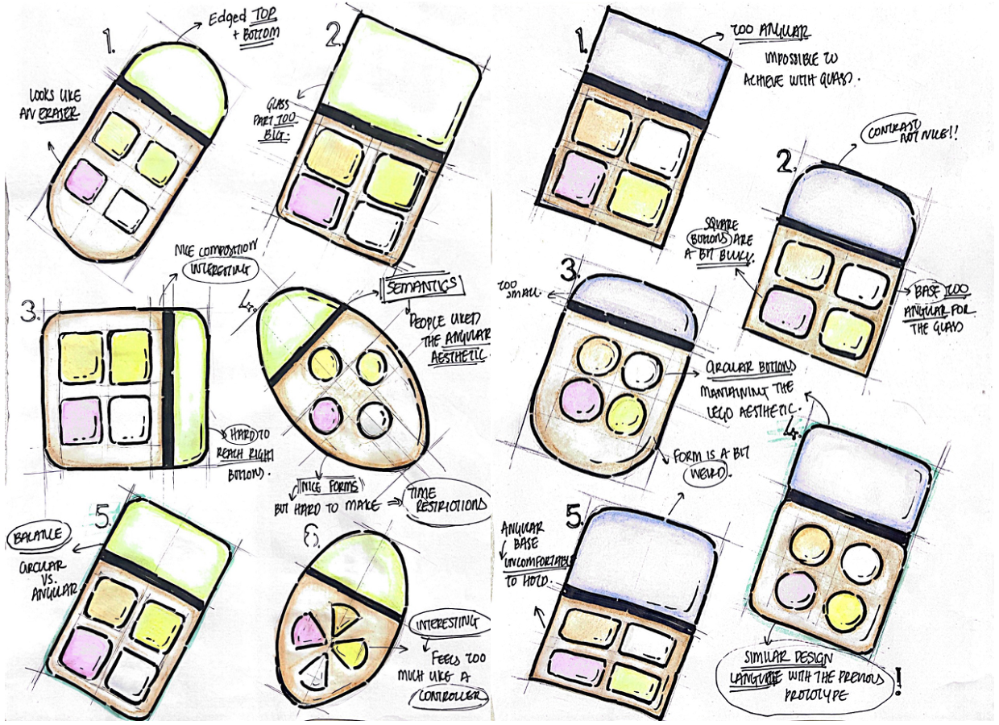
Milo is an "adult toy", which made the CMF choice tricky. Pastel buttons on wood gave the playfulness without tipping into youth product, and kept a quiet line of sight back to the original Simon: nostalgia without imitation.
Sized to be held like a small game controller. The side button for "ready to play" sits under the index finger.
Bright primaries would read as a children's toy. Muted pastels keep the Simon-coded colour memory but feel calmer and more adult.
The blown-glass cap diffuses the NeoPixel into a soft glow. White cap = Player 1, black cap = Player 2.
The second prototype (after the pivot) was rebuilt from scratch in roughly two weeks. Laser-cut MDF for the housing, hand-blown glass for the diffuser, and laser-cut layered button caps.
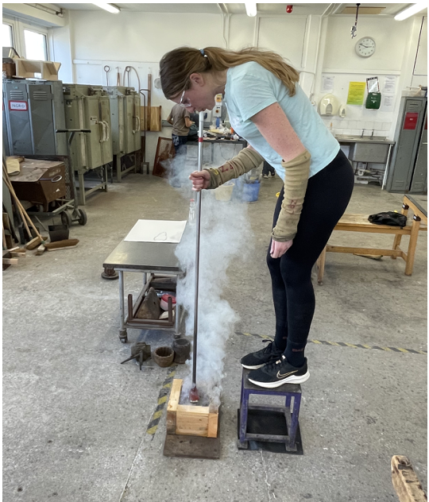
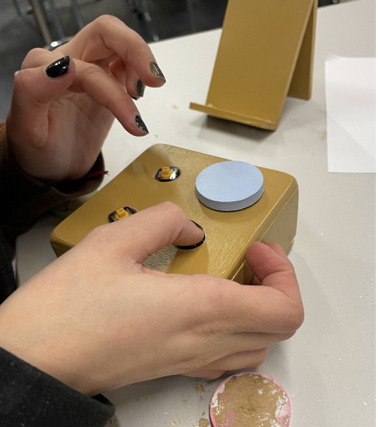
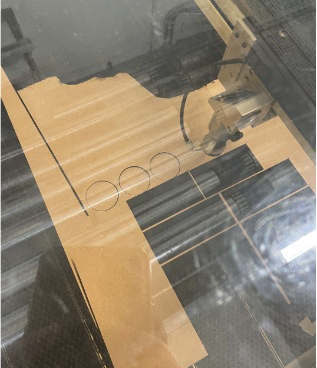
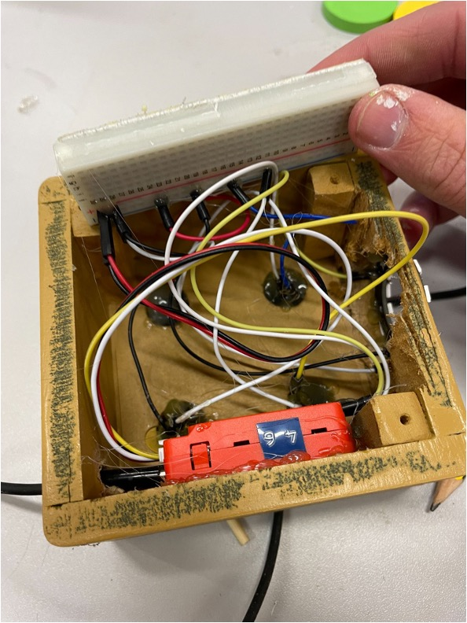
Most of the project ran in true collaboration. The split that emerged: I led sketching, and mind-mapping; Quentin led CAD and digital renders. Code, electronics, testing, physical making and the design judgement around the pivot were shared decisions.
Each Milo runs on an M5 Stick C Plus, an ESP32-based microcontroller with Wi-Fi and a built-in LiPo battery. The two units talk to each other through Adafruit IO: each press writes to a cloud feed, the partner unit subscribes and plays it back. Game state lives in the cloud, so the two players never need to be online at the same time.
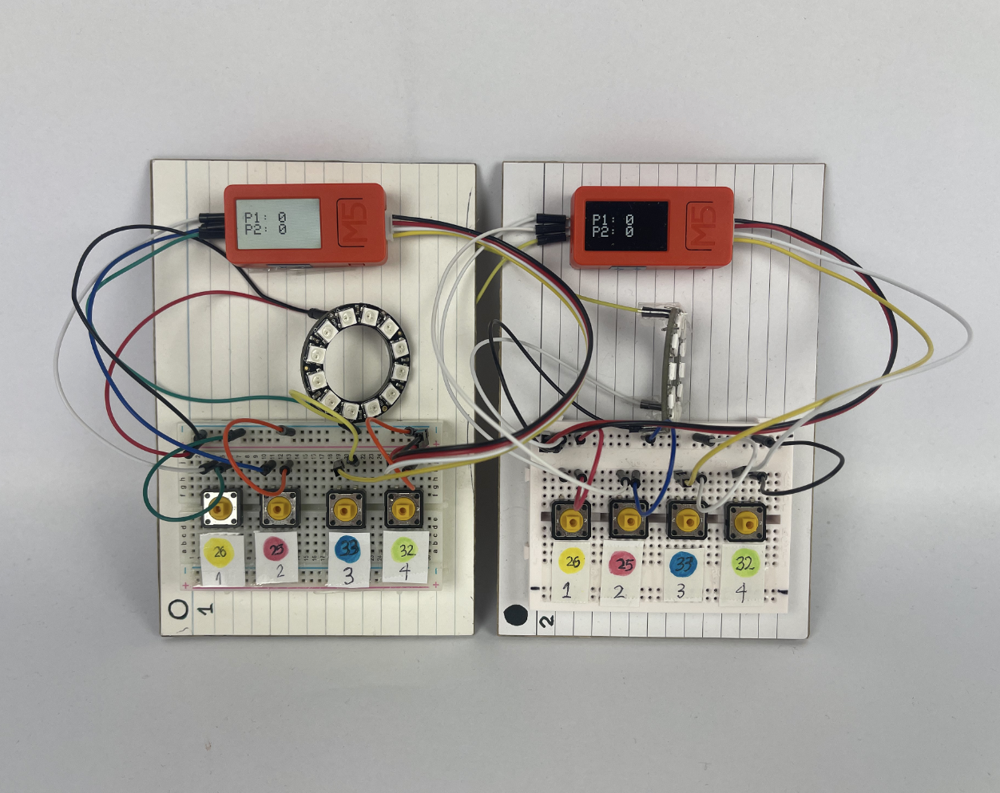
Runs the code, handles Wi-Fi, and pushes button events to Adafruit IO. Built-in LiPo battery means the device is portable; the built-in screen is repurposed as a small score readout.
Soldered into the casing rather than left on the breadboard so the layered laser-cut caps could sit flush. Each press writes a colour ID to the cloud feed.
Mounted under the glass cap. Plays back the colour sequence, signals turn state (blue = your turn, green = correct, red = wrong), and animates the win/loss beeps.
Re-uses the M5's built-in button, extended into the casing with a small wooden dowel and a painted cap. Used to confirm "I'm ready to receive the sequence."
A small piezo speaker plays the rising and falling beeps for win and loss. Adafruit IO carries the two feeds (send + receive) that connect the pair across distance.
The second phase mattered most: we each took a unit home and played for a couple of days, to test the design where it was actually meant to live.
Button feedback "ideal amount of wonky". Beeps clear. Right level of difficulty.
"Add a colour" cue unclear. Unit could be thinner. Some pastels confused at a glance.
Prompted texting between rounds. Felt sense of connection even with no contact. Spread-out rounds genuinely harder.
Could get repetitive over a long stretch without gameplay variation.
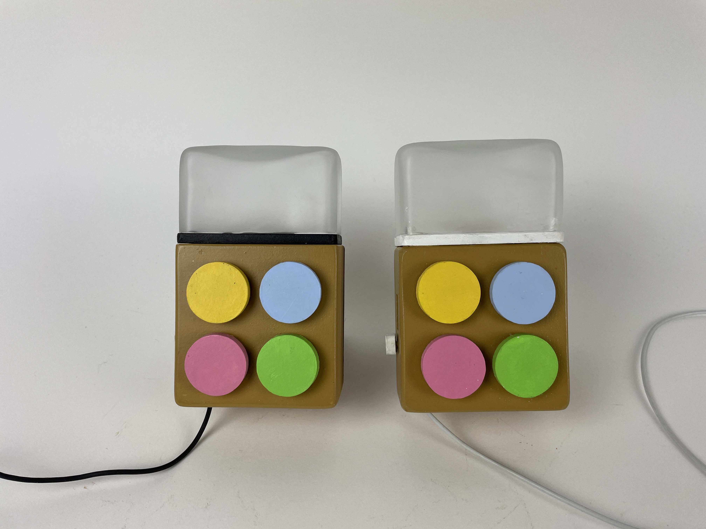
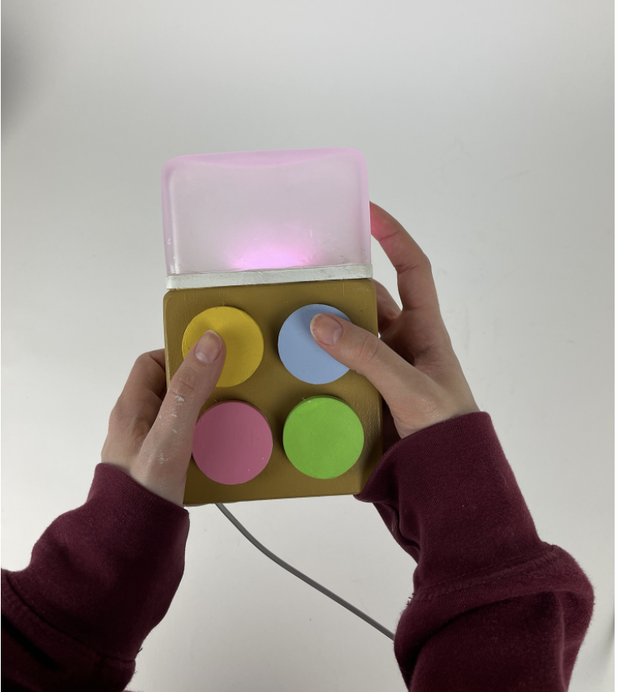
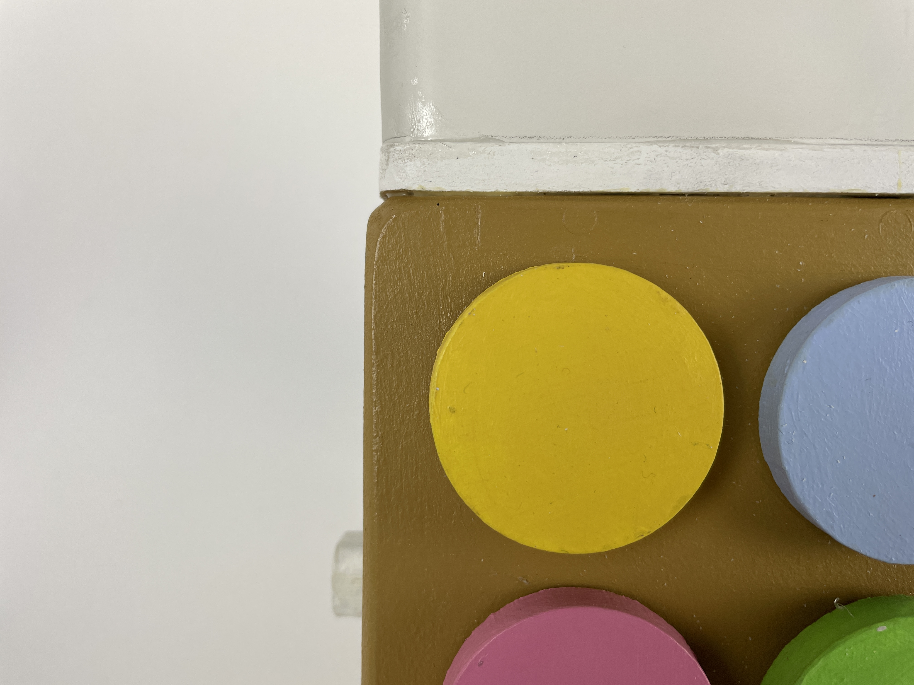
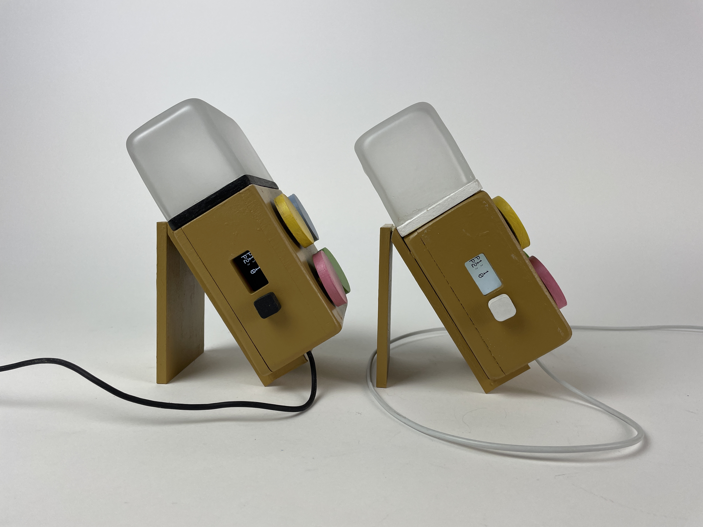